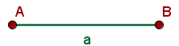
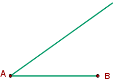
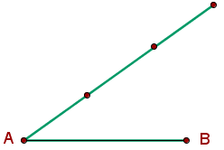
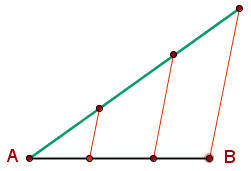

Segmentos
Segmentos
Segmento es la porción de recta limitada por dos puntos, llamados extremos.
Se designa por los puntos que lo limitan o por una letra minúscula.

Tipos de segmentos:
1 Segmento nulo:
Un segmento es nulo cuando sus extremos coinciden.
2 Segmentos concatenados:
Dos segmentos son concatenados cuando tienen un extremo en común.
3 Segmentos consecutivos:
Dos segmentos son consecutivos cuando además de tener un extremo en común pertenecen a la misma recta.
4 Mediatriz de un segmento:

La mediatriz de un segmento es la recta que pasa por el punto medio del segmento y es perpendicular a él.
Operaciones con segmentos
1 Suma de segmentos:
La suma de dos segmentos es otro segmento que tiene por inicio el origen del primer segmento y como final el final del segundo segmento.
La longitud del segmento suma es igual a la suma de las longitudes de los dos segmentos que lo forman.
2 Resta de segmentos:
La resta de dos segmentos es otro segmento que tiene por origen el final del segmento menor y por final el final del segmento mayor.
La longitud del segmento diferencia es igual a la resta de las longitudes de los dos segmentos.
3 Producto de un número por un segmento:
El producto de un número con un segmento es otro segmento resultado de repetir el segmento tantas veces como indica el número por el que se multiplica.
La longitud del segmento obtenido es igual al número por la longitud del segmento inicial.
4 División de un segmento por un número:
La división de un segmento por un número es otro segmento tal que multiplicado por ese número da como resultado el segmento original.
La longitud del segmento obtenido es igual la longitud del segmento inicial divido por el número.
División de un segmento en partes
Dividir el segmento AB en 3 partes iguales:
1 Se dibuja una semirrecta de origen el extremo A del segmento.

2 Tomando como unidad cualquier medida, se señalan en la semirrecta 3 unidades de medida a partir de A.
3 Por cada una de las divisiones de la semirrecta se trazan rectas paralelas al segmento que une B con la última división sobre la semirrecta. Los puntos obtenidos en el segmento AB determinan las 3 partes iguales en que se divide.
